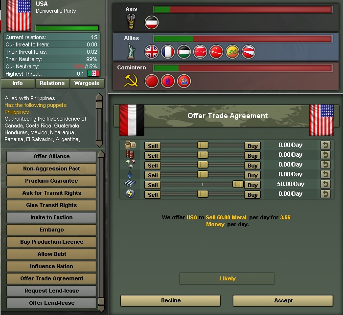
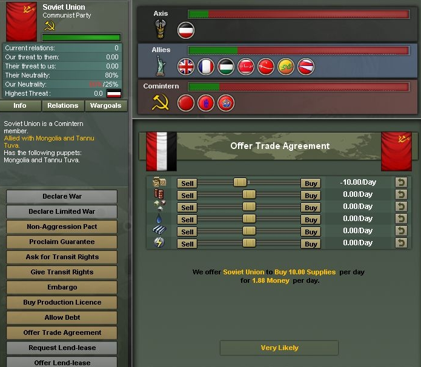
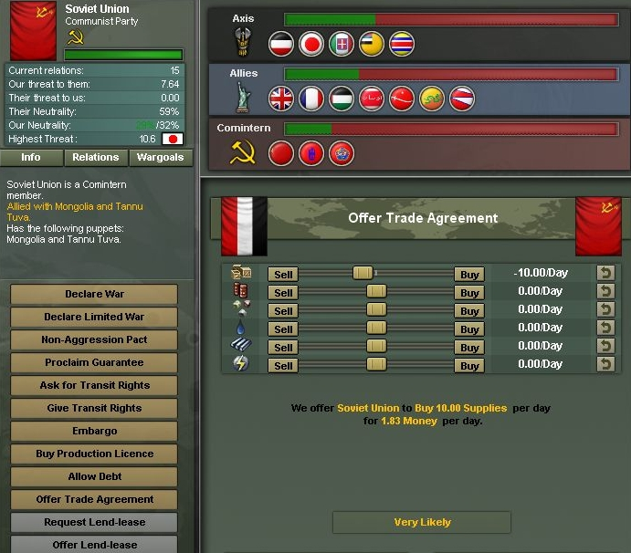
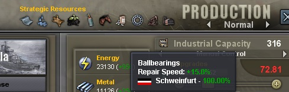
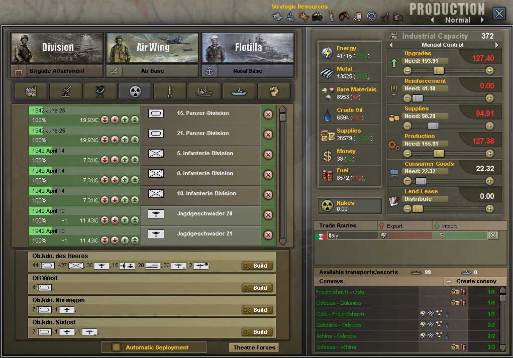

W głównym oknie mamy przedstawione składy 3 sojuszy dostępnych w grze. Paski obok przestawiają potencjalną siłę sojuszu. Łatwo więc porównać, że samotna Rzesza jest słabsza od Aliantów czy Cominternu.
Klikając w nazwę sojuszu na górze na liście poniżej wyświetlą się kraje należące do wybranego. Przy każdym kraju widać jakie zagrożenia od dla nas generuje, oraz stan jego surowców. Klikając na surowce w panelu nad listą krajów można segregować od kraju który go najwięcej produkuje, do kraju który ma największy deficyt wybranego towaru.
Każdy kraj posiada jakąś neutralność. W 1936 Rzesza ma tylko 60% neutralność, im jest ona mniejsza pozwala nam brać coraz lepsze prawa wojenne. Każde kolejne prawo coraz lepiej napędza przemysł ( zwiększa mnożnik między potencjałem podstawowym, a potencjałem dostępnym ). Przedstawione jest też państwo które jest największym zagrożeniem dla naszego. Na tą chwilę jest to UK. Ponieważ jest liderem wrogiego sojuszu z którym sąsiadujemy ( Francja, która jest w Aliantach ). Z czasem zmieni się to na ZSRR.
Po prawej jest magiczny trójkącik w którym rozrzucone są wszystkie kraje w grze. Trójkąt ten pokazuje w stronę której frakcji kierują się poszczególne nacje. W dużym uproszczeniu, zazwyczaj gdy kraj już dojdzie do jednego z wierzchołków może zostać zwerbowany do frakcji. Wszystko jednak też zależy od poziomu neutralności tego kraju. Gdy jest ona zbyt duża, będzie to niemożliwe.
Na kraje te można wpływać by kierowały się one w strone naszego wierzchołka. Służy do tego opcja Inlfuence Nation która jest dostępna po kliknięciu na dane państwo. Kosztuje ona 2 pkt dyplomatycznie miesięcznie. Jest możliwe że wszystkie 3 frakcje będą wywierały wpływ na dany kraj, np. Polskę. W takim wypadku będzie ona dryfować po środku. Niektóre z krajów mają z automatu narzucony "drift" w jedną ze stron. Jak np. Włochy, Japonia i USA.
Korpusy ekspedycyjne, nie jest wyświetlona w tym momencie. Pojawia się w czasie wojny. Pozwala przesłać danemu krajowi pod komendę poszczególne dywizje, korpusy, armie, teatry. Żadnego limitu, oczywiście floty i lotnictwo też.
Jest też Offer Aliance i Invite to Faction tych opcji też tu brakuje ponieważ UK jest we wrogim sojuszu. Dodatkowo w oknie dyplomacji mamy podstawowe informacje o kraju. Z kim ma sojusz, komu dało gwarancję, puppety, z kim prowadzi wojnę. W zakładce relations są jego relacje z każdym innym państwem w grze. W zakładce Wargoals pokazane są cele do których dążą kraje w wojnie z wybranych krajem ( nie wiedziałem jak to inaczej nazwać ). Przykładowo ZSRR może dać na Polskę 3 wargole. Conquer Eastern Poland, Install Communism, make a Puppet. Więcej o wargoalach będzie później.
To jest jedna z ważniejszych rzeczy jeśli chodzi o przemysł. Bez handlu skończą nam się surowce. Chyba jedynie giganty jak ZSRR i USA nie są zagrożone utratą surowców i mogą całkowicie olać handlowanie. Cała reszta musi importować przynajmniej jeden z surowców. Zużycie surowców zwiększa się wraz ze wzrostem naszego IC. Tak więc na początku możemy nawet nie mieć deficytu, jednak po wbiciu lepszych praw i zwiększeniu ilości IC nawet dwukrotnie pojawią się problemy, a często w tym momencie większość krajów już nie chce z nami zawierać umów ( wojna ).
Najważniejsza jest tutaj produkcja zaopatrzenia ( supplies )! Nie wolno przesadzać z suwakiem w produkcji. ZAOPATRZENIE TO GŁÓWNY TOWAR EKSPORTOWY krajów które mają deficyt surowców strategicznych. Sprzedając zaopatrzenie do gigantów takich jak ZSRR czy USA zarabiamy spore ilości pieniędzy. Odbywa się to oczywiście kosztem IC które musimy przeznaczyć na produkcję zaopatrzenia, a nie np. produkcję czołgów.
W przypadku Rzeszy jedyny surowiec o który jesteśmy spokojni to energia. Prawie od razu dobija do pełnego stocku i rzadko z niego schodzi. Reszta to koszmar. Zmuszeni jesteśmy od startu importować metal, materiały rzadkie i ropę. Nasza krajowa produkcja nie wystarcza na pokrycie potrzeb przemysłu i pomimo spore stocku ( 30% - 50% ) bez importu skończyło by się jeszcze przed wojną. Najeżdżając myszką na surowce w górnym panelu widzimy ile samodzielnie produkujemy dziennie, ile importujemy / eksportujemy oraz finalny bilans czyli czy odkładamy do stocku czy też mamy deficyt. Wydobycie wewnętrzne można zwiększyć za pomocą odpowiednich technologii ( na modach są do tego specjalne budynki ), oraz poprzez podbijanie prowincji produkujących dany surowiec!
AI widząc że mamy deficyt surowców, a pieniądze na plusie od razu zaspami nas ofertami ( gorzej niż Arcy na steam ), ten okres trzeba cierpliwie przeczekać. Podpisując umowę handlową z krajem zwiększamy nasze relacje o 10. Umowę podpisać możemy co kilka dni. Na start sprzedajemy do USA i ZSRR niewielkie ilości (po 1 suppla ) podnosząc nasze relacje do 200. Dlaczego tak? W innym wypadku, gdy będziemy mieli za mało relacji nie sprzedadzą nam np. 50 jednostek ropy. 50 to maksymalna ilość jednostek jednego surowca przy jednej umowie możliwych do kupna. Możemy wybrać kilka surowców przy jednej umowie, jednak wtedy prawdopodobieństwo zaakceptowania przez AI spada.
Tutaj jak widać pomimo małych relacji USA jest przychylne zgodzenia się nam sprzedać 50 metalu dziennie. Nie jest pewne, że zaakceptują tą ofertę. Zamiast likely może być jeszcze "maybe ( 50%? ) / impossible / very likely ( 100% ) "
Tak więc gdy już dobijemy te 200 relacji, zaczynami podpisywać umowy na kupno ropy / metalu / materiałów po maksymalnej ilości tak by nasz zapas rósł w dość przyzwoitym tempie, w przypadku Rzeszy, materiałów i metalu bijemy pod kurek bo na wojnie tracimy prawie cały import. Cały czas pilnujemy by sprzedawać odpowiednią ilość suppli by nasz zapas pieniędzy również rósł. Tutaj bezpieczne już będzie 20k - 25k
Może się pojawić pytanie, ale dlaczego to głupie AI kupuje przez lata miliony ton tego suppla?? Właśnie nie jest głupie! Państwa AI mające pełno surowców sprzedając je mają często pełen stock dolarów i nie mają co z tym robić. Kupując od nas suppla zwalniają sobie IC którego nie muszą już przeznaczać na jego produkcję, a mogą przeznaczyć na inne rzeczy.
Ostatnia ważna rzecz. Do handlu coś jest jeszcze potrzebne, skrzynki z metalem i beczki z ropą same oceanu nie przepłyną. Do transportu potrzebne są okręty które również produkujemy w panelu produkcji. Podczas wojny można je zatapiać, dlatego podczas walki z UK tak przydatne są U-Boot. Przed łodziami podwodnymi niszczącymi nasze konwoje można sie bronić na kilka sposobów. Dobudowywać do konwojów okręty eskorty, obie opcje są obok siebie w panelu produkcji więc łatwo znaleźć. Trasę każdego konwoju mamy na zaznaczoną na mapie zaopatrzeniowej i morskiej więc możemy posłać tam destroyery lub jeśli mamy ich nadmiar to lotniskowce. O tym że nam topią konwoje dowiemy sie z wyskakujących raportów, a miejsce te bedą odpowiednio zaznaczone na mapie morskiej.
Relacje między państwami nie tylko wpływają czy dane państwa połączy sojusz wojskowy, pozwolenie na przemarsz i stacjonowanie wojsk czy też sprzedaż licencji. Wzajemne relacje mają bezpośrednie przełożenie na koszty wymiany handlowej. W grze multiplayer ta zależność praktycznie nie ma znaczenia. W przypadku gry singlowej, dla państw borykających się z deficytem surowcowym, może przynieść wiele korzyści. Na początku każdego scenariusza, relacje pomiędzy państwami mają wartość zero. Patrząc na koszt handlu, bez względu z kim chcemy handlować, koszt zakupu/sprzedaży surowców będzie taki sam.
Dla przykładu poniżej mamy Niemcy w scenariuszu 1938. W momencie startu gry, Berlin może sprzedać zaopatrzenie ZSRR dokładnie za tyle samo co USA. Nie ma znaczenia, że z jednym państwem znajdujemy się na tym samym kontynencie oraz totalne różnimy się ustrojowo z oboma partnerami handlowymi. W obu przypadkach zysk ze sprzedaży jest taki sam. Podobnie będzie z zakupem od obu państw np. ropy.
Sytuacja zmienia się diametralnie, gdy wzajemne relacje zmienią się z jednym z państw. Jak widać poniżej, Berlin trochę bardziej pokochał się z Moskwą, dzięki czemu koszt sprzedaży zaopatrzenia do ZSRR zmalał. Przy zakupie ropy przez Berlin byłoby tak samo. Relacje z USA nie zmieniły się i koszty handlowe pozostały na tym samym poziomie.
Należy pamiętać, że pozytywne relacje między państwami wpływają na niższe ceny kupna/sprzedaży, natomiast im bardziej relacje są chłodne, handel staje się coraz droższy aż w końcu staje się niemożliwy.
Powyższą zależność można wykorzystać w bardzo prosty sposób. Wspomniane Niemcy przy zastosowaniu wielokrotnych umów handlowych, polepszają sobie relacje z ZSRR. Dzięki temu po bardzo atrakcyjnych cenach, kupują ropę i metale rzadkie. Aby zniwelować ubytek złota w skarbcu oczywiście sprzedają głównie zaopatrzenie. Jednak nie robią tego do ZSRR tylko tam gdzie mogą zarobić najwięcej, czyli w tym przypadku do USA. Różnica w cenach dość szybko odbije się na wielkości skarbca
Inną formą optymalizacji handlu należy podjąć już na samym początku gry. Nie robimy tego pierwszego dnia ale drugiego, najpóźniej trzeciego. Ma to związek z mechaniką gry, która wszelkie decyzje „zatwierdza” o północy każdego dnia. Po dwóch, trzech dniach państwa AI mają już wykrystalizowane stany surowców i w tym momencie przechodzimy do działania. Klikania jest sporo ale warto. Po prostu po kolei próbujemy sprzedać każdemu państwu cokolwiek co uznajemy, że mamy w nadwyżce. Jedynym wyznacznikiem jest to czy państwo jest chętne do akceptacji takiej umowy. Jeśli dana umowa po jakimś czasie zostanie zerwana, próbujmy ponowić ją ale z mniejszymi wartościami. Oczywiście mając nadwyżkę surowców, można sobie darować taką ekwilibrystykę. Jednak zarobione w ten sposób złoto przyda się bardzo do zakupu zaopatrzenia. Jeśli umów na kupno zaopatrzenia jest dużo, to okaże się, że sami na ten cel nie wydajemy potencjału przemysłowego.
W zakładce produkcji znajduje się ogrom przydatnych informacji. Na samej górze praktycznie poza oknem znajdziemy spis zasobów strategicznych które wspierają nasz przemysł zapewniając odpowiednie bonusy. Wystarczy na nie najechać i wiemy która prowincja je generuje i jakie bonusy daje. Przykładowo łożyska.
Po lewej stronie w głównym oknie mamy 3 zakładki. Pierwsza odpowiada za budowę dywizji, druga za lotnictwo, trzecia za flotę.
Zaraz pod przyciskiem kreatora dywizji jest menu budowy pojedynczych brygad ( dywizja składa się w podstawce z minimum 2 brygad, max 5 ). Produkowanie całej armii za pomocą brygad jest totalnie nieopłacalne, jednak potrzebne jeśli chcemy wyprodukować tylko kilka specjalistycznych brygad do uzupełnienia istniejących już jednostek. Dlaczego nieopłacalne? Cała dywizja złożona z 4 brygad kosztuje mniej IC niż suma IC każdej z brygad będących w jej składzie oddzielnie.
Po prawej jest okienko budowy lotnisk. Czasami przydatne jeśli chcemy operować z jakiejś wyspy. Ogólnie jednak w podstawce nie ma jakiejś większej potrzeby rozbudowy lotnisk. Im większy poziom lotniska, tym więcej samolotów może być w nim naprawiane jednocześnie
Na samym końcu, Naval Base, czyli porty. Tak samo jak z lotniskami, im większy poziom portu, tym więcej okrętów może być naprawionych w tym samym czasie. Tutaj fajnie jest mieć kilka w pogotowiu. ( uwaga exploit? Chociaż większość legionistów uważa to za normę, opcję tę blokujemy w końcu w następnym modzie. Dalej działa na podstawce )
Cokolwiek byście nie budowali zawsze są dostępne dwie opcje wyboru "ilości" produkcji. Serial i Parallel, czyli seryjnie i równolegle. Zwiększając ilość Parallel dajemy więcej jednostek do produkcji na raz, np 4 dywizje pancerne. Natomiast ustawiając Serial 2 i Parallel 4, będziemy produkować 4 dywizje jednocześnie, jednak po skończeniu tych 4 na ich miejsce wskoczy właśnie druga partia ;Wink Ilość serii oznaczona jest w panelu produkcji jednostek cyfrą pomiędzy pod datą zakończenia produkcji, na screenie w samolotach +1.
Zaraz pod kreatorem dywizji i brygad jest 8 zakładek odpowiedzialnych za budynków, konwojów, eskorty oraz wsparcie ruchu podziemnego.
Resztę dostępnych budynków musimy klikać "z mapy" wchodząc bezpośrednio na prowincję.
Pod tym wszystkich mamy panel produkcji. Opiszę dokładny stan 15 Dywizji Pancernej będącej w produkcji. Po lewej na górze dokładna data zakończenia produkcji. Poniżej w procentach stopień pokrycia zapotrzebowania na IC. Mamy 100% więc robimy to najszybciej jak się da. Mamy też ilość potrzebnego IC by utrzymać stałe tempo produkcji na 100%, czyli 19.93 IC. Zaraz obok 4 przyciski odpowiedzialne za układanie jednostek według priorytetu produkcji. Jednostki są samej górze są pierwsze w kolejce. Po prawej na końcu magiczny X do skasowania produkcji ( no kto by się spodziewał )
Pod tym wszystkim mamy spis naszych HQ i ich zapotrzebowanie na jednostki. Można powiedzieć, że jest to zbędna opcja. Sami decydujemy o swoim buildzie Tongue Na samym dole magiczny znacznik, automatic deployment. NIE KLIKAMY! Powoduje, że jednostki po wyprodukowaniu automatycznie są przydzielane przez AI. Nie ma żadnej kontroli gdzie one trafiają.
W tym fajnym panelu mamy dane odnośnie wszystkich surowców, ich dzienny przychód, oraz ilość posiadanych atomówek! Zaraz obok tego, najważniejsze suwaczki w grze. Decydują rozdysponowaniu naszego IC. Zostawiamy to oczywiście na manual control, żadnego AI! Przy każdym suwaczku mamy zapotrzebowanie na IC.
Szybko jeszcze odnośnie sterowania suwakami. Możemy je zablokować na danej wartości prawym przyciskiem myszy, dzięki temu nie będą się poruszać gdy zmieniamy inny. Można też przeskoczyć od razu do wartości zapotrzebowania po prostu klikając na nią!
Pod tym wszystkim mamy spis wszystkich umów handlowych, możemy dokładnie sprawdzić co i za ile kupujemy, wystarczy najechać na daną ikonkę surowa, z łatwością możne je anulować klikając x. Jest tam też, znajduje się panel konwojów. Mamy przedstawioną liczbę dostępnych statków i eskorty. Opcję "Create convoy" o której będzie dokładniej w dalszym etapie ( zaopatrzenie na mapie ). I lista wszystkich konwojów, aktywnych i nieaktywnych. Port macierzysty i docelowy. Na mapie morskiej i suppli mamy ich dokładną trasę.